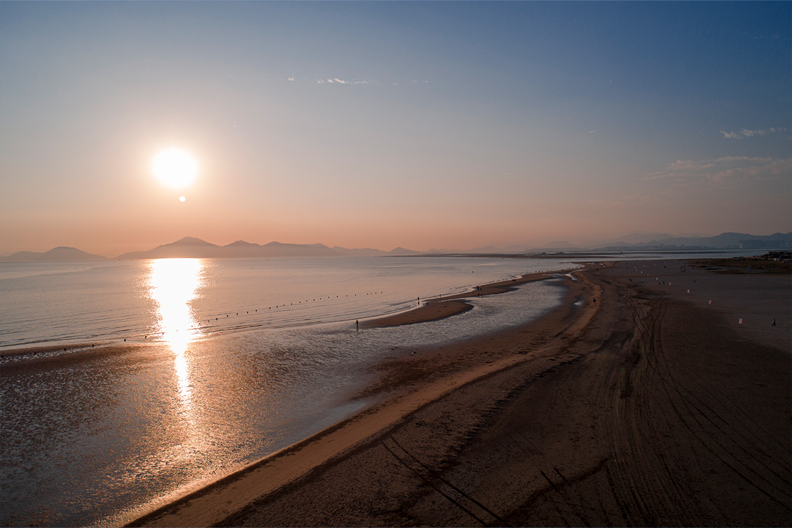
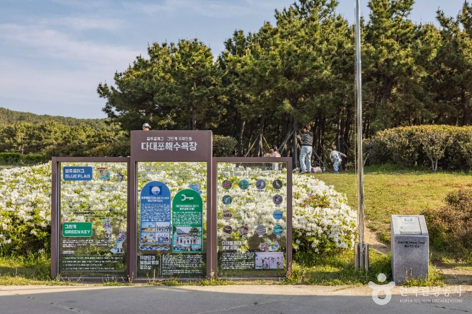
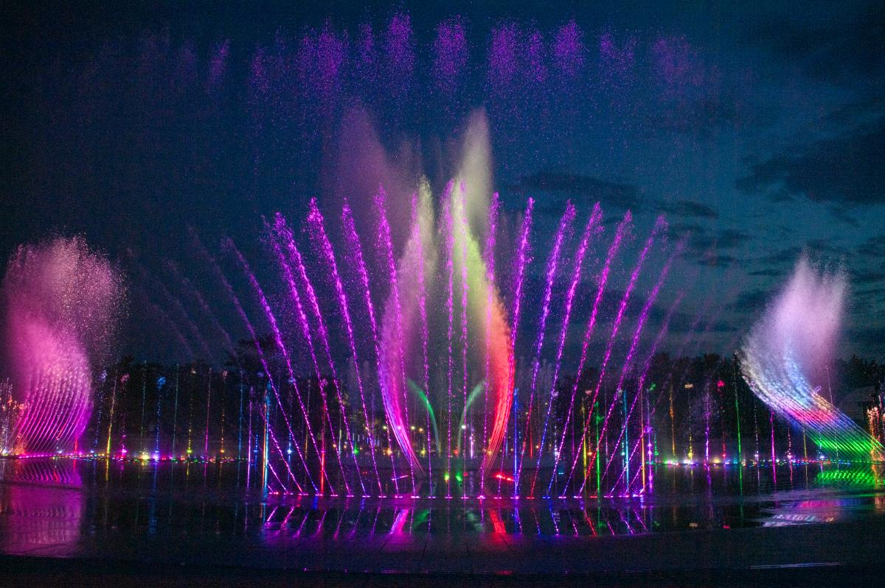

BUSAN WEST COAST · 01
SUNSET ARCHIVE
부산의 하루는
다대포에서
완성된다.
바다와 생태길, 노을과 음악분수가
한 번의 산책으로 이어지는 곳
35.0470° N · 128.9655° ESWIPE →

SUNSET ARCHIVE
바다와 생태길, 노을과 음악분수가
한 번의 산책으로 이어지는 곳
WHY DADAEPO

낙동강이 만든SOURCE · 부산광역시 사하구 문화관광
3 SCENES, ONE WALK
갈대와 갯벌 사이를 천천히 걷기
수평선과 물결이 만드는 여백 담기
일몰 전 가장 부드러운 빛 만나기

AFTER SUNSET
4월 24일—9월 30일 운영 예정
월요일 휴무 · 기상 상황에 따라 변동
SOURCE · 부산광역시 사하구 꿈의 낙조분수
SAVE THIS ROUTE
출구에서 해변까지 도보 약 10분
ACCESS · VISIT BUSAN